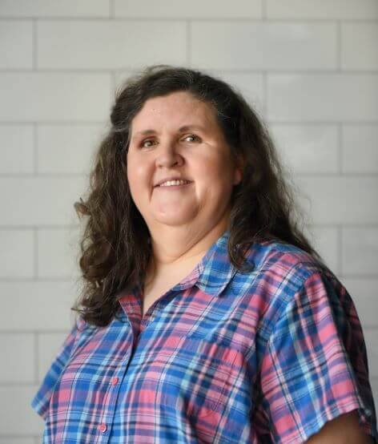

Kim Sorensen
I am a creative designer and a proactive customer relationship manager. I am a detail-oriented, dependable, and resourceful customer service professional with over 20 years of experience. I have the ability to problem solve quickly within tight deadlines and the ability to cultivate key client relationships in diverse industries. I have expertise in client services, account management, and dispatching. I am learning computer programming with the goal of becoming a full-stack developer. I have discovered that my favorite part of the stack is the front end, and I enjoy designing and creating websites and user interfaces.